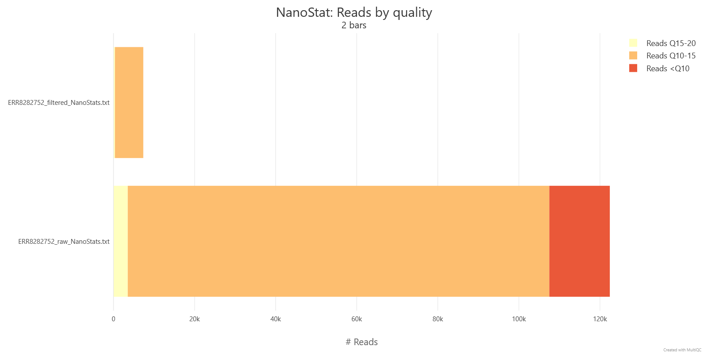

Basics of long read preprocessing
Hint
- Explain why long-read preprocessing is optional rather than mandatory, unlike short-read QC
- Decide, from a QC report, whether filtering or trimming is actually needed for a given sample
- Run Filtlong or fastplong to filter and trim long reads, and interpret their output
Once QC has told you what's actually in your reads, the next question is what — if anything — to do about it.
Does long-read data need the same preprocessing as short reads?
For long reads, that's a genuinely open question rather than a formality: unlike short-read QC, which more or less requires trimming as a matter of course, long-read QC tools can just display the picture and leave filtering and trimming as an optional next step, not a mandatory one.
!!! question To preprocess or not to preprocess? For bacterial genome assembly with a modern long-read assembler, the honest answer is: often, not much. Flye, the assembler used in this training, is explicit about this — its own documentation states that preprocessing usually isn't necessary, since Flye automatically filters out chimeric reads and reads with bad ends, and adapter trimming and quality filtering aren't required either. Oxford Nanopore gives essentially the same guidance from the sequencing side: most of their own benchmarks are built on the default pass/fail cut-offs applied in MinKNOW, so pass-filtered reads straight out of basecalling should generally already be fit for analysis, without a dedicated trimming step in between.
That's not a blanket rule, though — it's a reasonable default, not a law. Whether preprocessing is worth doing still depends on your aim, the specific quality of your data, and which assembly tool you're using, since not every assembler handles messy ends and adapters as gracefully as Flye does.
What to check before deciding
Before deciding whether to filter, look at what your QC reports are actually telling you: average read length, average quality, whether quality varies meaningfully across the length of a read, and whether adapter sequence is still hanging around. Each of these points to a different plot — NanoPlot's "read length vs average read quality" view for the first two, FastQC's adapter content panel for the last — but together they tell you whether preprocessing would actually change anything or just cost you time.
Quality
A nanopore run might show a mean read quality sitting around Q9, which by itself isn't a red flag so much as a data point to weigh against your read depth: if you have plenty of reads to spare, it's reasonable to set a stricter quality threshold and filter more aggressively; if reads are scarcer, a lighter touch — or no filtering at all — may serve you better, since throwing away marginal reads costs you coverage you might actually need.
Adapters
Adapters are worth checking separately, since they won't show up in a length or quality summary. If your reads were basecalled with adapter trimming switched off, or run through a tool that doesn't handle this, adapter sequence can still be sitting at the ends of reads even when length and quality otherwise look fine — and it's worth trimming regardless of what the rest of your QC report says.
Coverage and read length
Of everything here, though, coverage and read length matter more than any single quality metric when it comes to whether an assembly will actually close. As a rough guide, 30x or greater coverage of ONT reads, with an N50 of several kilobases, is generally enough for a contiguous assembly; higher coverage still can help improve consensus quality on top of that. Coverage in the 20–30x range can still work reasonably well depending on the platform and the read length distribution, but datasets below 10x coverage generally aren't worth attempting to assemble. Flye specifically expects coverage above 10x and an N90 read length over 1 kb (5 kb or more is preferable), and it simply won't run on reads shorter than 1 kb.
Software overview
If your QC results do point towards filtering or trimming — noisy reads, adapter contamination, or simply more reads than you need — a few tools are commonly used for long-read data.
Porechop
Porechop finds and removes ONT sequencing adapters from reads: adapters at the very start or end of a read are trimmed off, and if an adapter turns up in the middle of a read, that read is treated as chimeric and split into two. It also demultiplexes reads barcoded with ONT's Native Barcoding Kit, PCR Barcoding Kit, or Rapid Barcoding Kit.
Warning
Porechop was declared unsupported/abandonware by its author back in October 2018. It's still one of the most widely used tools in long-read pipelines — the reputation is well earned, it works — but it hasn't been actively maintained since.
fastplong
fastplong is a fast, general-purpose preprocessing and QC tool for long reads (Nanopore, PacBio, and others), built along similar lines to the popular short-read tool fastp.
Typical command and options
All the filters below are enabled with sensible defaults and each can be switched off individually if you don't want it.
Quality filtering — enabled by default (-Q / --disable_quality_filtering turns it off). A read can be filtered in several ways:
-
Unqualified bases:
-q/--qualified_quality_phredsets the quality threshold for an individual base (default Q7), and-u/--unqualified_percent_limitsets the maximum percentage of a read that may fall below that threshold (default 40%). For example, to require individual bases to meet Q7 and allow no more than 30% of bases below that threshold, use: -
Ambiguous bases:
--n_base_limitsets the maximum number ofNbases allowed in a read (disabled by default), while-n/--n_percent_limitsets the maximum percentage ofNbases allowed (enabled by default). For example, to allow no more than 100Nbases and no more than 20%Nbases, use: -
Mean read quality:
-m/--mean_qualsets a minimum average quality for the whole read. Reads with an average quality score below this value are discarded; the default is 0, meaning that no minimum is required.
Length filtering — enabled by default (-L / --disable_length_filtering turns it off). -l / --length_required sets the minimum (default 20 bp), and --length_limit an optional maximum (default 0, meaning no limit).
Adapter trimming — enabled by default (-A / --disable_adapter_trimming turns it off), and trims both read ends. If you know your adapter sequences, specify them directly:
using -s / --start_adapter for the 5′ adapter and -e / --end_adapter for the 3′ adapter — if you only give -s, fastplong uses its reverse complement as the end adapter. For trimming several possible adapters at once, give a FASTA file instead with -a / --adapter_fasta. If none of these are specified, fastplong tries to auto-detect adapters at each end, which works reasonably well but carries some risk of misidentification, particularly on reads with no real adapter present.
Poly-X trimming — disabled by default (-x / --trim_poly_x turns it on). When enabled, fastplong looks at the very end (3′) of each read for a homopolymer run — the same base repeated back-to-back, whatever that base happens to be (poly-A, poly-T, poly-G, or poly-C) — and trims it off if the run is at least --poly_x_min_len bases long (default 10 bp):
This is a much narrower check than adapter trimming: it only ever looks at the true 3′ terminus of a read, and only removes a genuine, unbroken run of one repeated base — it won't catch homopolymer-like stretches sitting anywhere else in a read, or a run that's broken up partway through by a stray sequencing error.
Low-complexity filtering — disabled by default (-y / --low_complexity_filter turns it on). Unlike poly-X trimming, this isn't a targeted trim — it's a whole-read filter. It scores each read by what percentage of bases differ from the base immediately following them (base[i] != base[i+1]), so a read that's mostly one repeated or near-repeated base scores as low complexity, and the entire read is discarded if that score falls below -Y / --complexity_threshold (default 30, i.e. at least 30% of consecutive base pairs must actually change):
Full option reference: fastplong --help, or github.com/OpenGene/fastplong.
Outputs
We've run fastplong on the barcode01 sample:
fastplong \
--in "${input_fastq}" \
--qualified_quality_phred 13 \
--mean_qual 13 \
--trim_poly_x \
--out "trim_filter/${sample_id}.trimmed.filtered.fastq" \
--html "qc/fastplong_filter/${sample_id}.fastplong_report.html" \
--json "qc/fastplong_filter/${sample_id}.fastplong_report.json"
This command keeps a read only if it meets both quality criteria:
- A base is “qualified” when its Phred score is greater than or equal to Q13 (
--qualified_quality_phred 13) and at most 40% of bases may be below Q13. This is fastplong’s default--unqualified_percent_limit 40. - The read’s average Phred quality must also be greater than or equal to Q13 (
--mean_qual 13).
So a read is discarded if its mean quality is below Q13 or if more than 40% of its bases are below Q13.
It also applies the default length filter, discarding reads shorter than 20 bp, trims 3′ poly-X tails, and performs adapter trimming by default.
The following is printed to the standard output/error:
Trying to detect adapter sequence at read start
Detected: TAAGGTTAACACAAAGACACCGACAACTTTCTTCAGCACCT
Trying to detect adapter sequence at read end
Found possible adapter sequence, but it's too short: AGGTGCTGAAGAA, specify -e AGGTGCTGAAGAA to force trimming using this adapter
Before filtering:
total reads: 95064
total bases: 1328688619
Q20 bases: 486836383(36.6404%)
Q30 bases: 149845896(11.2777%)
After filtering:
total reads: 64248
total bases: 900258370
Q20 bases: 391376080(43.4738%)
Q30 bases: 130104974(14.452%)
Filtering result:
reads passed filter: 64248
reads failed due to low quality: 30840
reads failed due to too many N: 0
reads failed due to too short: 0
reads with adapter trimmed: 77375
bases trimmed due to adapters: 5658054
reads with polyX in 3' end: 365
bases trimmed in polyX tail: 10942
JSON report: fastplong_filter/barcode01.fastplong_report.json
HTML report: fastplong_filter/barcode01.fastplong_report.html
Alongside the summary printed to the console, fastplong's --html report renders the same before/after comparison as a series of plots and tables. Worth knowing what each one is actually showing:
- Basic statistics (before/after tables) — the same core figures as the stdout summary, plus median and N50 read length, and the percentage of bases above Q5/Q7/Q10/Q15/Q20/Q30/Q40. For barcode01, filtering barely moved the length figures at all — median length 9,018 bp → 8,975 bp, N50 24,028 bp → 24,232 bp, GC content 56.09% → 56.20% — which tells you this particular filter mostly removed low-quality reads, not particularly short or long ones.
- Read median quality statistics (histogram, before/after) — each read is reduced to a single median quality score, and the plot shows what fraction of reads (and of total bases) fall at each score. Before filtering, this spans roughly Q6–Q25 with a broad plateau across Q13–Q20 and a long thin tail below Q10; after filtering, everything below Q13 has been cut away — exactly what
--mean_qual 13is meant to do — leaving essentially the same Q13–Q20 plateau shape, just with its low-quality shoulder removed. - Density plot of read median quality and read length (before/after) — a 2D density view combining the two axes above, plotting median quality against read length for every read at once. It's the same kind of plot as NanoPlot's read-length-vs-quality view, just built into fastplong's own report.
- Quality (per-position, before/after) — a per-position quality curve, but split out by which base was called at each position (separate lines for A, T, C, and G) rather than one combined average. Splitting it this way can reveal a systematic quality difference tied to a specific base — for instance, if one nucleotide is consistently harder for the basecaller to call confidently — that a single averaged curve would hide.
- Base contents (per-position, before/after) — the same per-position base composition view as FastQC's "Per Base Sequence Content" plot, with the overall base percentages given directly in the legend. For barcode01: A 21.9%, T 22.0%, C 27.8%, G 28.3%, N ~0% before filtering, barely different after (A 21.9%, T 21.9%, C 27.9%, G 28.3%) — removing the lowest-quality reads didn't meaningfully shift the overall base composition.
- KMER counting (before/after) — a heatmap of k-mer frequency bias across the read set, the same underlying idea as FastQC's k-mer content module: it flags short sequence motifs turning up more or less often than chance would predict, which can point to residual adapter fragments, systematic basecalling bias, or genuine biological signal such as a repeat-rich genome.
Question
FastQC reported so many reads with poly-A tails — why did fastplong trim only a handful of them? What other filters would you use if you really wanted to get rid of poly-A-rich regions?
Success
FastQC is telling you how many reads contain something A-rich somewhere; fastplong is only acting on the much narrower case of a genuine poly-A (or poly-X) tail sitting right at the very end of the read. The two counts were never measuring the same event, so there's no reason to expect them to agree.
If the goal is to more aggressively strip out poly-A-rich sequence — not just the strict, unbroken 3′ tails --trim_poly_x catches — a few options are worth combining:
- Supply poly-A explicitly as a custom adapter, via
-a/--adapter_fastawith a poly-A entry (fastplong's own documentation gives exactly this as a worked example). Unlike--trim_poly_x, adapter trimming isn't restricted to a clean homopolymer run right at the 3′ end, so it can find and trim poly-A-like stretches with a few mismatches in them, wherever they sit near a read's ends. - Loosen
--poly_x_min_lenbelow the default 10 bp, so--trim_poly_xalso catches shorter poly-A runs at the 3′ end that currently fall under the length threshold. - Low-complexity filtering is a good instinct (
-y/--low_complexity_filter, described above) — but it's worth being clear about what it actually does before reaching for it: it's a whole-read discard, not a targeted trim.
Info
Worth knowing before reaching for Porechop or fastplong: ONT's own basecallers can already handle some of this. Dorado can trim adapter/primer sequences and demultiplex barcoded reads, and supports doing both either in-line during basecalling or afterwards as a separate step on an already-basecalled dataset (dorado trim / dorado demux). Guppy is more limited: general adapter trimming only happens in-line during basecalling, with no standalone way to re-trim already-basecalled reads — but demultiplexing is available separately too, via its own guppy_barcoder tool, which can also trim the detected barcode sequences as part of that offline step. Since some of this can happen well upstream of QC and preprocessing, it's worth checking whether your reads have already been through it before assuming Porechop or fastplong still need to do the job.
Filtlong
Filtlong filters long reads using a combination of read length (longer is better) and read identity (higher is better), producing a smaller, better subset of your original reads. Without an external reference, it judges quality from the Phred scores already in your FASTQ file.
Typical command and options
A typical command looks like:
filtlong --min_length 1kb --keep_percent 90 --target_bases 500mb input.fastq.gz | gzip > output.fastq.gz
--min_length/-ldiscards anything shorter than the given threshold;--max_length/-Ldoes the same for anything longer.--keep_percent/-pthrows out the worst-scoring reads by base count (not by read count) — so--keep_percent 90discards the worst 10% of bases.--target_bases/-ttrims the read set down until only the given amount of sequence remains, which is handy for very large datasets.
Filtlong writes filtered reads to stdout in their original input order, not sorted by score — pipe to gzip (or wherever else you want the output to go), as above.
How reads are chosen. Filtlong first checks each read against a set of hard thresholds — --min_length, --max_length, --min_mean_q / -q, and --min_window_q — and any read that fails one of these is marked as failed outright, regardless of how it scores otherwise. Every read that survives is then given a final score, and if --keep_percent and/or --target_bases were used, reads are ranked by score and a cut-off applied — using whichever of the two settings is more stringent, if both are given.
Adjusting the balance between length and quality. By default length and mean quality are weighted equally (--length_weight, --mean_q_weight, both default 1), but this is tunable.
For more detailed instructions, run filtlong --help, or check github.com/rrwick/Filtlong.
Outputs
Unlike fastplong, Filtlong doesn't produce its own HTML or JSON report — it just writes filtered reads to stdout. To see what it actually changed, we re-run QC on the filtered file and compare it against the raw one via MultiQC.
Run on ERR8282752, filtering with --min_length 1kb --target_bases 150mb — targeting roughly 30x coverage, assuming a ~5 Mb bacterial genome — MultiQC's combined report shows:
| Raw | Filtered | |
|---|---|---|
| Reads | 122,479 | 7,346 |
| Total bases | 840.5 Mb | 150.0 Mb |
| Median read length | 4,613 bp | 18,379 bp |
| Read N50 | 10,688 bp | 21,213 bp |
| Median quality | Q12.6 | Q13.8 |

Filtering all but eliminates the lowest-quality reads: the raw file has 12.2% of reads below Q10, which drops to 0% after filtering, while the Q10–15 share grows from 84.9% to 95.1% — Filtlong is doing exactly what --target_bases 150mb promises, keeping only enough of the best-scoring reads (by combined length and quality) to reach 150 Mb of sequence.
The jump in median length (4,613 bp → 18,379 bp) and N50 (10,688 bp → 21,213 bp) is far larger than quality filtering alone would explain. Filtlong's score is weighted by length as well as quality, and because --target_bases keeps only as many of the top-scoring reads as it takes to reach 150 Mb — rather than a fixed percentage of the input — the cut here is much more aggressive than a percentage-based cutoff would be, and it disproportionately favours the longest reads.
Success
You can now look at a QC report and make a deliberate decision about whether preprocessing is worth doing, and if so, run Filtlong or fastplong to filter and trim your reads. Next, we'll use these (optionally cleaned) reads to check what species they actually came from, before moving on to assembly.
Exercise
Run Filtlong to keep only long reads longer than 1 kb and target 150 Mb of the best-scoring sequence (keep length and quality equally weighted) — roughly 30x coverage, assuming a ~5 Mb bacterial genome. Direct the standard output to a file named <sample>.filtered.fastq.gz. Run FastQC and NanoPlot on the filtered file (use the commands from the Quality control module but change the folder name from raw to filtered). And analyse how the quality statistics changed by running MultiQC together on both qc folders.
Question
- What is the number of reads before and after filtering? How did that change?
- What is the median Qscore before and after filtering? How did that change?
- What is the median length and N50 before and after filtering? How did that change?
Solution
The following command will: - filter the reads by keeping only long reads longer than 1 kb and targeting 150 Mb of the best-scoring sequence (~30x coverage of a 5 Mb genome) - run FastQC and NanoPlot on the filtered reads - run MultiQC on all the quality control reports for raw and filtered reads
# EDIT THIS LINE: replace with the path to your sample FASTQ file
input_fastq=/path/to/your/sample.fastq.gz
# Create the top-level output directories
mkdir -p qc/filtered/fastqc
mkdir -p qc/filtered/nanoplot
mkdir -p qc/multiqc
mkdir -p filtered
# Derive a clean sample ID from the file name
sample_id=$(basename "$input_fastq")
sample_id=${sample_id%.fastq.gz}
filtered_fastq="filtered/${sample_id}.filtered.fastq.gz"
# Filter to 150 Mb of the best-scoring reads (~30x coverage of a 5 Mb genome), minimum length of 1kb
filtlong --min_length 1kb --target_bases 150mb "$input_fastq" | gzip > "$filtered_fastq"
# NanoPlot output for this sample
mkdir -p qc/filtered/nanoplot/
NanoPlot \
--fastq "$filtered_fastq" \
-p "${sample_id}_filtered_" \
--loglength \
--N50 \
-o qc/filtered/nanoplot/
# FastQC output for this sample
mkdir -p qc/filtered/fastqc/
fastqc \
-f fastq \
-o qc/filtered/fastqc/ \
"$filtered_fastq"
# MultiQC report for raw and filtered reads
multiqc \
-o qc/multiqc/ \
-f \
--fullnames \
qc
Answers will vary depending on which sample you were assigned. Reference values on three of the samples used in this training, before and after filtering:
Raw vs. filtered (--min_length 1kb --target_bases 150mb):
| Metric | ERR8282742 (raw) | ERR8282742 (filtered) | ERR8282751 (raw) | ERR8282751 (filtered) | ERR8282753 (raw) | ERR8282753 (filtered) |
|---|---|---|---|---|---|---|
| Number of reads | 39,172 | 9,282 | 121,009 | 6,936 | 31,430 | 11,009 |
| Total bases | 306.9 Mb | 150.0 Mb | 882.0 Mb | 150.0 Mb | 242.4 Mb | 150.0 Mb |
| Median Qscore | 13.6 | 14.4 | 12.7 | 13.9 | 12.7 | 13.5 |
| Median read length | 5,440 bp | 13,949 bp | 4,898 bp | 19,657 bp | 5,254 bp | 11,500 bp |
| Read length N50 | 12,290 bp | 17,691 bp | 11,490 bp | 22,579 bp | 12,333 bp | 16,061 bp |
1. Number of reads after filtering? 9,282 / 6,936 / 11,009 — down from 39,172 / 121,009 / 31,430. Because --target_bases 150mb pins the total output size, not a fixed fraction of reads, how many reads that takes depends entirely on how deep the raw sample was to begin with: the read count drops by 76% for ERR8282742, 94% for ERR8282751 (the deepest raw sample, at 882.0 Mb), and 65% for ERR8282753 (the shallowest, at 242.4 Mb).
2. Median Qscore after filtering? Q14.4 / Q13.9 / Q13.5 — up from Q13.6 / Q12.7 / Q12.7, a gain of roughly 0.8–1.2 points across all three samples.
3. Median length and N50 after filtering? Median length 13,949 / 19,657 / 11,500 bp and N50 17,691 / 22,579 / 16,061 bp — median length roughly 2.2–4x higher, and N50 up by 40–95%. That's because Filtlong's score is weighted by length as well as quality, and --target_bases fills the 150 Mb quota with the highest-scoring reads first, so it disproportionately keeps the longest reads too, not just the highest-quality ones.
Hint
Why would it be not the best idea to keep using Porechop?
Solution
Porechop was declared unsupported/abandonware by its author back in October 2018 and hasn't been updated since (see the warning above) — it still works and is still widely used, but relying on an unmaintained tool means no bug fixes, no support for newer chemistries or adapter sequences, and no guarantee it keeps working as basecallers and library kits evolve.
References
TO DO